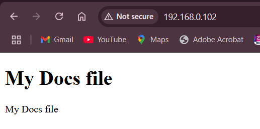

Apache Server in Ubuntu

Step by Step :
- Update package of your linux
sudo apt-get update- Install package apache
sudo apt-get install apache2 - Change Directory to sites-available on directory apache
cd /etc/apache2/sites-available- In this directory, you can see there’s 2 default configuration
perwira203@ubuntu~/etc/apache2/sites-available# ls
000-default.conf default-ssl.conf- The 000-default.conf is for http service
000-default.conf- The default-ssl.conf is for https service
default-ssl.conf- The configuration that on is the default http service, so you can copy it and make new configuration file
sudo cp 000-default.conf myconfig.conf- Edit your configuration file
sudo nano myconfig.conf- Change the path file of the configuration
DocumentRoot /var/www/htmlto
DocumentRoot /var/www/myconfig- Save the file with press ctrl with x, and press y and enter for the changes
- Create the directory for our config
sudo mkdir /var/www/myconfig- Change directory to myconfig
cd /var/www/myconfig- Create the html file
sudo touch index.html- edit html file
sudo nano index.html- Write html file
<!DOCTYPE html>
<html>
<head>
<title>My Docs file</title>
</head>
<body>
<h1>My Docs file</h1>
<p>My Docs file</p>
</body>
</html>- Deactivate the default configuration file
sudo a2dissite 000-default.conf- Activate myconfig configuration file
sudo a2ensite myconfig.conf- Restart your apache server
sudo systemctl reload apache2- This is how it’s gonna look 